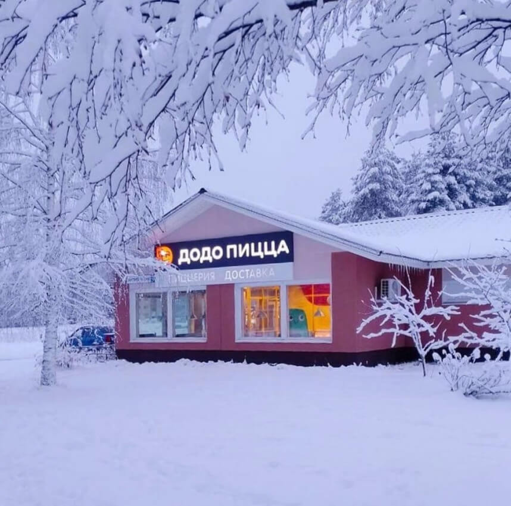

Додо Пицца появилась в 2011 году в Сыктывкаре. Всего через 12 лет у нас 935 пиццерий в 17 странах, а скоро будет в два раза больше.
Все заказы в реальном времени
Секрет нашего успеха в устойчивой бизнес-модели, доверительных отношениях с партнёрами-франчайзи и сильном бренде, который неразрывно связан с нашей культурой. Этот сайт — про культуру и бренд.
Пицца-опыт
Хорошая пицца
Наша пицца — просто хорошая. В соцсетях нам часто говорят, что в ресторане пицца вкуснее — на тонком тесте, из печи, только что приготовленная! — и это правда.
Тем не менее ежедневно десятки тысяч человек делают заказы и ставят нам пять звёздочек. Около 80% наших заказов — повторные, а около 10% клиентов возвращаются к нам постоянно — раз в две недели и чаще.
За что же нас так ценят клиенты?
Выдающийся опыт
Мы получаем эти пять звёздочек за так называемый «пицца-опыт». Наш продукт — не пицца, а вся цепочка событий от идеи съесть пиццу до полного удовлетворения всех возникших потребностей. А это намного сложнее, чем просто пицца:
мы должны составить меню, в котором каждый клиент найдёт для себя что-то привлекательное — это и про рецепты, и про порции, и про цены;
сделать мобильное приложение удобным и предсказуемым;
обеспечить в пиццериях уют, хорошую атмосферу и удобный процесс заказа;
выполнять заказы быстро, готовить вкусно, собирать без ошибок;
доставлять быстро и в целости, отдавать с улыбкой;
любые возникающие проблемы решать быстро и легко.
Вот это и есть наш продукт. За это нас и любят.
Доставка
Своя доставка
Додо Пицца — это в первую очередь своя доставка:
курьер с фирменной термосумкой,
фирменной улыбкой,
и специальным фирменным приложением в кармане.
Это приложение очень умное, оно знает, как оптимизировать маршруты, чтобы доставлять быстрее. Обычно оно говорит курьеру: «Не жди следующий заказ, вези этот, а потом возвращайся!» — вот настолько умное.
Только с собственной доставкой наш пицца-опыт получается бескомпромиссным. Правда в том, что на новых рынках мы всегда сотрудничаем с агрегаторами — это хороший способ повысить заметность бренда и свою доступность для людей. Но мы стараемся как можно больше заказов доставлять самостоятельно и как можно раньше отказываться от услуг агрегаторов. Наша доставка — круче.
Пиццерия
Проверенное место
Мы хотим оправдывать ожидания в любой точке мира. Приезжаете в другой город, а там такая же прекрасная Додо Пицца, что и дома.
У нас есть «городской» формат, где удобно перекусить, пока бегаешь по делам где-нибудь в центре, и есть «семейный», с детскими комнатами, чтобы поужинать с детьми и не тратить полвечера на дорогу.
Отзывчивые люди
В Додо работают отзывчивые и приветливые люди, которые рады каждому без исключений. Ситуации случаются разные — клиенты роняют еду и разливают напитки, затрудняются с выбором и не могут найти информацию, а ещё иногда у них просто очень сложный день. Мы проявляем принципиальную отзывчивость и всегда готовы помочь.
Уют и чистота
У нас приятно провести время — подождать заказ с собой, быстро перекусить одному, посидеть с друзьями или отметить день рождения в большой компании.
Наши пиццерии спроектированы для чистоты — всё моется легко и часто, а тайные инспектора чистоты проверяют каждый уголок. Мы соблюдаем все стандарты — и государственные санпины, и внутренние, более строгие.
Приложение
Вроде обычное приложение
На первый взгляд, наше приложение делает то же самое, что и любое другое доставочное. Есть меню с фотками и ценами, можно добавлять и убирать ингредиенты, отслеживать статус заказа, оценивать и оставлять отзывы.
Но нет
Мы максимально заморочились с каждым шагом:
не только доставка по адресу, но ещё доставка до столиков и очень удобный «тейкевей» — можно прогуливаться мимо пиццерии, заказать чуть заранее и забрать заказ буквально за минуту, это невероятно ценится среди родителей с детьми и колясками;
не просто меню с фотками, а удобное, информативное и предельно честное — мы фотографируем только настоящие продукты, в фотошопе не дорисовываем, показываем как есть;
не только кастомизация ингредиентов, а ещё конструктор комбо и большая пицца из половинок;
не просто цены, а полноценная программа лояльности с кешбэком и миссиями, а также персональными предложениями и кучей промокодов (люди ненавидят программы лояльности за навязчивость и нерелевантность, а нашу любят за уместность и заметную выгоду);
не только статус заказа, а ещё и веб-камеры, показывающие, как заказ готовится на кухне;
не просто отзыв, а возможность дать детальный фидбэк о каждом аспекте заказа и через это повлиять на наши процессы и рецепты.
В общем, это очень хорошее приложение.
А ещё оно единое для всех стран. Это значит, что можно путешествовать и ничего не переустанавливать. А ещё это значит, что как только мы запилим тёмную тему, сплит чека или трекинг курьера на карте — это появится сразу у всех.
Поддержка
Принцип нулевой безответности
Иногда что-нибудь случается. Да что уж там — случается постоянно! У нас очень большая сеть, нас много, мы люди, и мы ошибаемся.
Поэтому мы очень серьёзно относимся к фидбэку. Каждый полученный напрямую отзыв выводится на специальные экраны — в пиццериях и офисах. Эти отзывы реально влияют: доходят и до конкретных пиццерий, и до менеджеров управляющей компании, иногда приносят радость, иногда страшную боль. Но каждый инцидент расследуется, а выявленные проблемы превращаются в задачи со сроками и ответственными.
Мы не пытаемся снизить нагрузку на службу поддержки — не прячем людей за тупыми ботами, не усложняем доступ к операторам, а наоборот, активно запрашиваем фидбэк. К тому же, мы ищем его сами — на картах, в сервисах отзывов, в соцсетях, просто в интернете.
И всегда всем отвечаем.
Сначала решаем проблемы клиентов, только потом свои
Есть много способов реагировать на проблемы неправильно. Например, можно не глядя закидывать промокодами по сто рублей. Или можно уходить на три дня искать виноватых. Или грустно извиняться и ничего не делать.
А правильный способ только один:
сначала решить проблему клиента, как можно быстрее, не создавая при этом ещё больше проблем;
только после этого идут извинения и промокоды;
а если проблема системная — то и направленный поиск системного решения.
Именно так мы и делаем. Именно поэтому мы любим фидбэк — он не мешает нам, а наоборот, усиливает бизнес и делает отношения с клиентами крепче.
Доверять выгодно, а проверять некогда
Наша поддержка очень быстро решает проблемы — 70% всех вопросов закрывается во время первого разговора. Это возможно, потому что мы много доверяем.
В первую очередь доверяем клиентам — если говорят, что пицца подгорела, значит, так и есть, не нужно фотографировать; если курьер опоздал — ну, значит, и вправду опоздал. Мы уязвимы в меру: алгоритмы выявляют намеренные злоупотребления и предупреждают операторов. Иногда люди врут и ошибаются, но выгоднее всем верить, чем всех подозревать.
Ещё мы доверяем своим операторам. Даём инструменты решения проблем — возможность быстро связаться с курьером, менеджером, партнёром, с управляющей компанией. И достаточные полномочия — право выдать промокод или увеличить скидку.
В итоге получается невозможное: служба поддержки, которая действительно поддерживает!
Это то, что мы сами считаем важным, во что искренне верим, к чему стремимся? Или это то, что ценят в нас клиенты, за что выбирают и выделяют среди других?
Может показаться, что это два разных вопроса, и нужно выбрать, на какой отвечать. Наш секрет в том, чтобы иметь на эти вопросы одинаковые ответы.
Это работает на личном уровне:
Если человек ценит качественную работу, и человека ценят за качественную работу — получается, в вопросах качества он может просто быть собой.
Если человек ценит открытость, и человека ценят за его открытость — значит, его интересы идеально выровнены с интересами окружающих. Это признак целостности, а может, и рецепт счастья.
На уровне компании это работает точно так же:
Если мы как организация системно вкладываемся в доступность своих продуктов, и клиенты ценят нашу доступность — значит, нам не нужно притворяться, мы можем просто быть собой.
Если каждый человек в компании сердцем чувствует, что отзывчивость важна и делает мир лучше, а наши клиенты согласны и ценят нашу отзывчивость — значит, мы можем просто заниматься тем, во что верим, и ни секунды не тратить на «красивую картинку».
Вин-вин!
Доступность
Додо Пицца — это массовый бренд, и идея доступности пронизывает весь наш бизнес. Мы стремимся быть доступными для каждого клиента без исключений, в самом широком смысле:
Географическая доступность. Открываемся в самых отдалённых городах, уплотняем зоны доставки, чтобы быть ближе.
Ценовая доступность. У нас изначально нормальные цены; ещё у нас много выгодных комбо; ещё мы следим, чтобы в меню были хорошие варианты не только для больших компаний, но и на одного, для двоих; ещё у нас всеми любимая программа лояльности, а там промокоды, промокоды, много промокодов.
Доступность в интерфейсах. Наше приложение адаптировано для слабовидящих и незрячих, а также для людей с нарушениями моторики, чувствительностью к свету или резким анимациям.
Доступность в архитектуре. В законодательстве уже есть все необходимые стандарты, мы соблюдаем их не формально, а по правде.
Отзывчивость
Мы принципиально отзывчивые.
Мы считаем, что отзывчивость делает мир лучше. Она улучшает отношения между людьми, помогает выстраивать доверие.
Мы проявляем отзывчивость:
на кассе — создаём дружелюбную атмосферу и помогаем с выбором;
в службе поддержки — откликаемся на любые запросы, а если что не так, быстро решаем любую проблему;
в публичном пространстве — внимательно относимся к каждому отзыву, комментарию и предложению, всем отвечаем;
в диалоге с партнёрами и командой — всех ценим, ни от кого не отмахиваемся, слышим и учитываем интересы каждого.
Важно, чтобы отзывчивость была принципиальной. Не ситуативной, по случаю хорошего настроения, а безусловной, всегда и везде. Наша отзывчивость сильнее усталости, сильнее любых обид, сильнее технических и организационных сложностей, сильнее любого «но».
Доверие
Мы строим бизнес на доверии. Это ключевой принцип, позволяющий нам направлять творческую энергию тысяч талантливых людей на одно большое дело, вовремя узнавать о любых проблемах, жить счастливо и ничего не бояться.
Мы доверяем:
Клиентам. Пара примеров: ставим возле касс открытые витрины-холодильники, где можно взять товар до оплаты; в службе поддержки в спорных ситуациях верим на слово; скидку в день рождения даём без документов; если клиент случайно разольёт кофе, делаем новый бесплатно.
Сотрудникам. Считаем каждого партнёром по общему делу. Не вводим KPI, используем OKR. Никогда никого ни за что не штрафуем. Амбициозным ребятам доверяем ответственные роли часто немного «на вырост», даём возможность проявиться.
Партнёрам. Открываем доступ к информации безо всяких НДА и обязательных платежей. Доверяем мнению опытных франчайзи, поддерживаем инициативы и учимся у них, ключевые решения обсуждаем на специальном Совете партнёров.
Миру. Верим, что никто специально не желает нам зла, поэтому внимательно слушаем критику.
Конечно, мы не терпим намеренного обмана. Если мы достоверно выясняем, что кто-то вредит специально — мы принимаем меры. Но вместо того, чтобы подозревать каждого и позволять отдельным людям заслужить доверие — мы доверяем каждому, и позволяем отдельным людям стать досадным исключением.
Это уязвимая позиция. У нашей службы поддержки довольно легко выдурить промокод, а из нашей открытой витрины не так уж сложно украсть салат. Мы знаем.
Просто не надо бояться. Доверять — выгоднее. Сто раз это проверяли с калькулятором в руке. Мы не боимся доверять, потому что уверены в себе, своих решениях, продуктах и взгляде на мир.
Открытость
Благодаря культуре открытости наша компания знатно выросла и ни капельки при этом не испортилась.
Открытость для нас — это:
Инструмент контроля качества. Когда всё на виду, намного проще проверить соблюдение стандартов.
Драйвер улучшений. Благодаря открытости мы не только постоянно получаем подсказки и внешние сигналы, но и принимаем их, используем для развития.
Прозрачность. У нас буквально прозрачные стены в пиццериях, а ещё у нас прозрачный бизнес, мы открыто публикуем финансовую информацию и огромное количество документов, включая этот самый.
Честность. Мы говорим как есть. Вся наша реклама — без подвохов и без мелкого текста. Мы очень дорожим словом и репутацией. Если мы ошибаемся, то не прячем ошибки, а признаём их и делаем выводы.
Непредвзятость. У нас с уважением относятся к людям всех национальностей, не судят по внешности, полу и статусу, со всеми работают на равных и всем одинаково доверяют.
Искреннее любопытство. Нам интересен мир во всём его многообразии: мы не пытаемся диктовать правила, а хотим одновременно и влиять на весь мир, и учиться у всего мира.
Мы не только поддерживаем эту культуру внутри компании, но и стараемся быть примером для всех — примером того, как непредвзятость, искренность, принятие различий и стремление находить общее помогают достигать выдающихся результатов.
Качество
Клиенты отлично чувствуют разницу между вкусным и невкусным, быстрым и медленным, удобным и неудобным, понятным и запутанным. Так что мы всерьёз заморачиваемся на качестве.
Заморачиваемся с ингредиентами. Внимательно выбираем поставщиков, никогда не экономим на вкусе.
Заморачиваемся с пищевой безопасностью. Тщательно соблюдаем режим хранения, перекладываем ингредиенты с полки на полку, безжалостно выбрасываем просроченное.
Заморачиваемся с тестом. Тщательно подбираем ингредиенты. Совершенствуем рецептуру. Проходим квест из граммов, градусов, процентов и часов с минутами. Строим производственно-распределительные центры, чтобы делать тесто в более предсказуемых условиях, чтобы с увеличением объёмов не снижалось качество.
Заморачиваемся с рецептами. Классические мировые бестселлеры улучшаем через детальный фидбэк тысяч клиентов, это называется R&Digital. Уникальные для рынков рецепты делаем экспертно, с душой, задействуя таланты наших шефов.
Продаём только свежую пиццу. В доставке укладываемся в среднем в 34 минуты. На витрине продаём кусочки не более 90 минут, потом безжалостно выбрасываем.
Как сохранять качество на длинной дистанции
Это сложно! Глаз замыливается. Легко перестать замечать проблемы и снизить требовательность к себе. Вот что нас выручает:
Глубокая оцифрованность бизнеса. Компьютерный глаз не замыливается. Алгоритмы не устают к вечеру. Мы разрабатываем собственную информационную систему — Додо ИС — с первого дня существования компании, и в управлении качеством она играет огромную роль.
Непредвзятость Она позволяет нам снова и снова смотреть на себя свежим взглядом, глазами клиентов. Правда же, их не волнуют сложности реализации? Вот и мы не ищем оправданий.
Принципиальность. Если пиццерия не обеспечивает качество, сначала мы всеми силами пытаемся помочь, а если это не находит отклика — требуем от партнёра продать пиццерию другому партнёру или даже закрываем её. Увы, такие случаи были.
Принципиальность. Однажды, очень давно, в одной из первых пиццерий оказались просроченными 20 кг пепперони. Всего на пару дней! Учитывая термообработку пара дней просрочки — вообще не проблема. 20 кг это много, и для нас это были большие деньги. Но мы решили всё выкинуть — не потому что это опасно есть, а потому что опасно идти на компромиссы в качестве. Стандарт — это стандарт.
И ещё раз принципиальность. Однажды мы выбросили запас чековой ленты стоимостью 11 млн рублей — на ленте было напечатано «не используем замороженный сыр», а с ростом сети ради пищевой безопасности мы решили, что лучше замораживать. Деньги было очень жалко, но продолжать говорить неправду мы не смогли. Кто-то сказал бы «ну когда эта лента закончится, тогда обещание и обновится, делов-то!» Не мы.
Доступность, отзывчивость, доверие, открытость и качество — это наша формула. Мы называем её ДОДОК, но это секрет — никому ни слова.
Каждый день наши клиенты решают множество задач: перезвонить, помочь, отвезти, придумать, обсудить, сделать. Параллельно с этим нужно успеть поесть, накормить, угостить, порадовать и позаботиться. Мы не знаем, о чём в точности они заботятся каждый день. Но знаем, как сделать любой день немного лучше! Когда человеку нужна пицца или лёгкий перекус, спокойный уголок или место для встречи — у него есть Додо Пицца.
Мы позаботимся о пицце, пока вы заботитесь о важном!
Видение
Мы смотрим в будущее с оптимизмом и верим в мир, полный преобразователей. Кто это такие и где мы их взяли? Рассказываем.
Аудитория Додо Пиццы — это десятки миллионов людей. Эти люди очень разные, непохожие, уникальные. Конечно же, мы внимательно их исследуем. Но в первую очередь нас интересует не пол, возраст или уровень дохода, а совсем другое: их активность и требовательность. Активность — инициативность и желание взаимодействовать. Требовательность — это внимание к своим потребностям и готовность прикладывать усилия.
Если из этих двух характеристик составить матрицу, мы получим четыре сегмента аудитории:
Наблюдатели
Активность невысокая
Требовательность невысокая
Это люди, которые заглянули к нам, чтобы съесть просто кусочек пиццы и пойти по своим делам, не запоминая, что там была за пицца.
Мы даём им этот кусочек в самом лучшем исполнении: вкусно, быстро и без сюрпризов.
Нам важно отвечать их потребностям. И нестрашно, что они не очень нас замечают, ведь иногда пицца это просто пицца.
Хранители стандартов
Активность невысокая или средняя
Требовательность высокая
Этим людям важно, чтобы пицца была нарезана ровно, сырники всегда были с румянцем, а капучино с правильной пенкой.
Нам тоже это важно! Ведь наша сила — в стабильном продукте и предсказуемом клиентском опыте.
Хранители стандартов ежедневно дают нам мегабайты фидбэка. Конечно, они стараются не ради нас — просто хотят, чтобы всё всегда было нормально. И, к сожалению, иногда они бывают в ярости. Мы ценим их в эти моменты тоже, бережно впитываем замечания и моментально на них реагируем.
Хранители стандартов делают нас сильными.
Получатели выгоды
Активность высокая
Требовательность невысокая
Эти ребята внимательно следят за скидками, промокодами и акциями, чтобы ничего не пропустить. И мы всегда готовы их порадовать!
Конечно, они следят не только за нашими акциями, а вообще за всеми — и не очень-то выделяют нас среди других. Это нормально, никто не обязан нас как-то особенно любить.
Наша главная задача — сделать вкусно, быстро и без сюрпризов, а остальное — нюансы.
И, наконец,
Преобразователи
Не просто активность, а проактивность
Высокая требовательность
Это люди, которым не всё равно. Они знают нас, рассчитывают на нас и следят за нашими успехами. А некоторые, как только приезжают в новый город — первым делом идут в Додо Пиццу!
Если что-то будет не так — преобразователи напишут нам в службу поддержки, и не потому что в ярости, а просто чтобы такого не повторилось — ни с ними, ни с кем-то ещё.
Преобразователи — в каком-то смысле наши партнёры. Мы показываем им пример открытости и доверия, помогаем опереться на что-то неизменное, даже если это обычная пицца. А они дают нам сотни идей, как можно сделать ещё лучше.
Преобразователи — это наши главные драйверы изменений. Они внимательны, отзывчивы и требовательны, они заставляют нас совершенствоваться.
Именно преобразователи вдохновляют нас и наделяют смыслом то, что мы делаем. Они превращают банальную пиццу — в шумный праздник, в момент заботы о себе или в жест поддержки. Они делают из Додо Пиццы что-то важное.
Додо Пицца — массовый бренд. У нас нет и не может быть нелюбимых клиентов, для нас важен каждый. Тем не менее, именно преобразователей мы считаем ядром своей аудитории, именно им хотим попадать в сердечко. И наша миссия связана именно с ними.
Миссия
Мы хотим, чтобы люди становились активнее и требовательнее — то есть чтобы преобразователей было как можно больше. Как на это повлиять? Мы знаем.
Чтобы повысить активность —
демонстрируем полную открытость
Все давно знают, что у нас везде камеры и прозрачные стены, это давно стало стандартом. Мы внимательно слушаем критику, чтобы меняться к лучшему. И, конечно же, мы счастливы разделять с гостями их радостные моменты, а иногда и помогать с ними.
Получается, с Додо Пиццей есть смысл делиться — и проблемами, и радостью. А может не только с нами? Мы на собственном примере показываем, что с открытостью и отзывчивостью мир становится более комфортным и безопасным местом. Мы показываем, что компания, построенная на культуре открытости, может процветать и уверенно развиваться.
Чтобы повысить требовательность —
создаём качественные продукты
Делаем вкусную пиццу, строим комфортные пиццерии, выпускаем удобные приложения. Так мы повышаем качество жизни людей, а они становятся требовательнее.
— Что, простите? Додо Пицца, качество жизни?
Если вы живёте в Москве, это может звучать странно. Но приезжайте, например, в Вельск. Приезжайте в любой из примерно четырёхсот малых городов России, Казахстана и Беларуси, где мы работаем — и добро пожаловать в Додо!
Где бы мы ни открывались, мы становимся примером отзывчивости, лучшего клиентского опыта и ответственного отношения ко всему — к работе, людям и окружающей среде.
Наша миссия —
развивать культуру открытости и повышать качество жизни людей, чтобы преобразователей становилось больше
Бренд-мемы
Мы называем бренд-мемами узнаваемые атрибуты бренда, которые отражают нашу культуру и ценности. Какие-то наши мемы — публичные и широко известные, а какие-то — локальные, внутренние. (А прямо сейчас мы уже делаем новые.)
Пупырки
Пупырки — это пузырьки, которые должны появиться на бортике пиццы, если всё хорошо. Есть миллион способов испортить тесто, и только один способ сделать всё правильно. «Пупырки» — это просто слово, но его легко запомнить, и оно помогает быстро определять качество теста. Пупырки — знак качества.
У каждой пиццерии есть публичный рейтинг. Это прямая и безжалостная оценка клиентского опыта, среднее арифметическое всех полученных от клиентов оценок — без фильтров, поправок и хитрых формул. Открытый рейтинг — ключевая метрика качества нашего бизнеса, мы постоянно её улучшаем и радуемся каждой сотой балла.
Гемба
Японская производственная практика, ставшая неотъемлемой частью нашей рабочей культуры. Гемба в Додо Пицце — это когда топ-менеджеры выходят на смену в пиццериях: стоят за кассой, делают пиццу и развозят заказы. Это позволяет увидеть все своими глазами, почувствовать боль от несовершенства инструментов и лучше понять бизнес. Гемба учит отзывчивости и радикальной открытости.
Такая наклейка сопровождает каждую нашу коробку. Так мы подчёркиваем персональную ответственность за качество, а заодно напоминаем, что всё хорошо.
Без перчаток
В Додо Пицце готовят без перчаток, и это требование качества. Перчатки лишь создают иллюзию чистоты. Мы сделали об этом целый сайт! (Готовы отстаивать стандарты, даже когда для этого нужно переубедить половину страны.)
Вы могли заметить, что это слово довольно часто встречается в брендбуке. Это потому что мы и в работе постоянно его используем. Додо Пицца — это сообщество гиков, и речь не только о разработчиках. Конечно, всё это ради качества. Но если посмотреть глубже, мы заморачиваемся ради себя — ради кайфа от работы и удовлетворения от результата. Вот такие мы люди.
Это я
Наклейка на зеркало, которая подталкивает сделать селфи, ну или просто периодически смотреть на себя свежим взглядом и рефлексировать.
Очень важные люди
Наклейка на стекло, отделяющее зал от кухни. С обеих сторон написано одно и то же: за этим стеклом очень важные люди.
Табличка на двери, отделяющей зал от кухни. Обычно на таких дверях пишут «только для персонала» или какое-нибудь «запрещено». А мы доверяем клиентам, и знаем, что запрещать необязательно, достаточно объяснить. И снова подчёркиваем, что люди, которые работают — важны.
Додо-книга
Это книга о том, как прыгать выше головы, ловить волну, двигать горы и менять мир. Наши принципы, подходы, достижения и инсайты, накопленные за годы работы. А ещё это просто пара десятков крутых историй, чтобы прочитать за вечер.
Это многоразовый пластиковый кейс для пиццы. В Додо Пицце много эко-инициатив, об этом есть телеграм-канал. А многоразовый кейс — наш главный эко-проект.
Додо Пицца знаменита своим дизайном. И это не случайность! С самого первого дня мы непрерывно ищем свой визуальный язык и уникальный стиль — просто потому что любим хороший дизайн, нам это интересно.
С ростом бизнеса требования возрастали: мы выходили на рынок Москвы, запускали федеральные кампании, открывались в США, Китае, Великобритании и Дубае, создавали новые цифровые продукты, новые форматы пиццерий — и каждый раз находили новые способы сделать бренд эстетичным, аутентичным и вайбовым.
В этом разделе собраны характерные образцы нашего дизайна, не только современные. А подробные гайдлайны постепенно переезжают на сайт дизайн-команды:
Dodo Rounded поддерживает русский, английский, немецкий, польский, румынский, словенский, финский, венгерский, узбекский, чешский, болгарский, украинский, белорусский и еще 80 языков.
И, конечно же, рассказ о бренде будет неполным без птички. Это наш маскот — постоянный спутник открытий, промокампаний и детских праздников.
Упаковка
Упаковка — один из самых заметных носителей, лицо бренда. Мы уделяем упаковке максимальное внимание, а временами относимся к ней как к произведению искусства!
Вот наша самая узнаваемая упаковка, которая несколько лет использовалась в России, Беларуси и Казахстане.
Выходя на новые рынки, мы каждый раз искали способы локализавать бренд, зазвучать на близком для людей языке. И упаковка всегда играла важную роль в этой задаче.
Додо Пицца в Великобритании Подробнее: The Clients
Додо Пицца — в первую очередь цифровая франшиза, а наши приложения — это главная продуктовая витрина и самая частотная точка контакта с брендом. Мы максимально заморачиваемся с приложениями!
Иногда мы делаем приложения внутри приложений. Например, у нас есть Сториз — целый мир контента со своей атмосферой.
Архитектура
Мы открываем пиццерии везде — в исторических районах, в мрачных девятиэтажках, в модных торговых центрах и в отдалённых малых городах. Разные локации требуют разных архитекурных решений, новые рынки требуют новых форматов, но в результате всегда получается та самая Додо Пицца.

В Додо Пицце всегда комфортно. Это значит: уютно, удобно, понятно, чисто, светло и не утомительно. Комфорт состоит из сотен деталей, и наши проекты все их учитывают. Мы сами ходим в свои пиццерии, потому что там хорошо.
Меню
Дизайн меню — это непрерывный процесс: запускаются сезонные продукты, корректируются цены, обновляется базовый ассортимент, запускаются промо-акции и комбо-наборы, фотолаборатория совершенствуется в фотосъёмке — а гибкая модульная дизайн-система всё это выдерживает. От рынка к рынку стилистика меняется, а система — работает.
Меню в РоссииМеню в КитаеМеню в ДубаеМеню в Турции
Меню на экранах обычно сопровождается печатной версией.
Ладно, всего не расскажешь! Дизайн у нас никогда не заканчивается, но брендбук в какой-то момент всё-таки должен. Если вам интересно, что нового в Додо Пицце прямо сейчас — приходите в наш Ютюб-канал! До встречи!


.jpg)